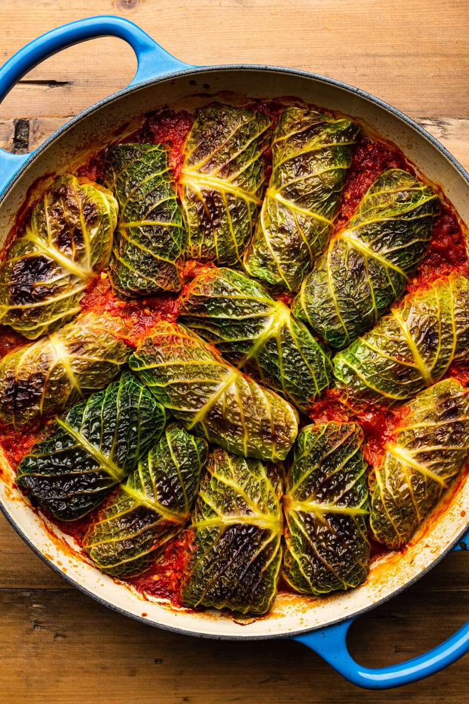

Farcellets de col

Description
A ‘farcell’ in Catalan is a bundle or a bolt of cloth.
This dish is best prepared with Manresan cabbage,
a unique winter vegetable from the Manresa region.
Despite often being mistaken for other cabbages like Savoy or kale,
it's a distinct hybrid with a highly prized flavor.
Ingredients
- 1 green cabbage
- 300 gr ground pork
- 20 gr raisins
- 20 gr pine-nuts
- 1 slice of bread, soaked in milk
- 50 gr dry white wine
- 2 garlic cloves
- 2 biscuits
- 20 gr almonds
- flour
Steps
- Prepare the cabbage by cleaning it, removing 12 leaves, trimming the thick stems, boiling them in salted water until bright green and slightly soft, then draining and cooling.
- Combine bread, ground pork, raisins, and pine nuts, seasoning to your liking.
- Form the rolls by placing a tablespoon of the mixture on each cabbage leaf and rolling them up.
- Distribute a spoonful of the mixture onto each cabbage leaf.
- Lightly coat the farcellets in flour and sauté them in hot oil until they are golden brown and fully cooked.
- Create a picada by crushing biscuits, almonds, and garlic in a mortar and pestle, then adding just enough oil to cover and mixing thoroughly into a thick paste.
- Pour dry white wine into a saucepan, reduce the liquid, add the picada and pork, and cook for 30 minutes.
Home